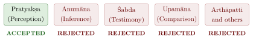
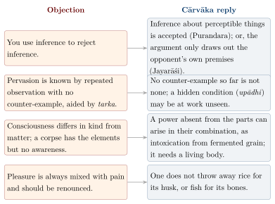

Chapter 9: Cārvāka — The Philosophy of Materialism¶
A Cārvāka Verse
yāvaj jīvaṃ sukhaṃ jīven nāsti mṛtyor agocaraḥ
bhasmībhūtasya dehasya punarāgamanaṃ kutaḥ
As long as you live, live happily; nothing escapes the eye of death. Once the body is reduced to ashes, how can it ever return?
— Verse ascribed to the Cārvākas in Mādhava’s Sarvadarśanasaṅgraha, ch. 1 (the variant “ṛṇaṃ kṛtvā ghṛtaṃ pibet”, “borrow and drink ghee”, appears among the verses that close the same chapter)
9.1 Introduction: The Dissenting Voice¶
In the Indian philosophical tradition the part of the materialist critic was played by the Cārvāka school, also known as Lokāyata (“prevalent among the people”, or “the worldly philosophy”) and as Bārhaspatya, after the legendary teacher Bṛhaspati. The name “Cārvāka” is of uncertain origin — it has been explained, probably fancifully, as cāru (pleasing) + vāk (speech), or as the name of a teacher — and is relatively late; older sources speak of Lokāyata. Hostile authors identified Bṛhaspati with the preceptor of the gods, who was said to have taught materialism deliberately to mislead the demons. The school is the most radical of the traditions Brahmanical authors called nāstika: it rejects not only the authority of the Veda but also the soul, God, karma, rebirth and any reality beyond the material world.
9.2 Sources and History¶
Historical Note: A Largely Lost Tradition
The foundational text of the school, a sūtra work ascribed to Bṛhaspati, is lost, together with its commentaries. About thirty of its aphorisms and some verses survive as quotations, which have been collected and studied by Ramkrishna Bhattacharya (Bhattacharya 2011). Most of our knowledge comes from opponents: Mādhava’s Sarvadarśanasaṅgraha (14th century), which devotes its first chapter to the Cārvākas; Haribhadra’s Ṣaḍdarśanasamuccaya (8th century); Śāntarakṣita’s Tattvasaṅgraha with Kamalaśīla’s commentary (8th century); and Jayanta Bhaṭṭa’s Nyāyamañjarī (9th century), which distinguishes “cunning” (dhūrta) from “educated” (suśikṣita) Cārvākas. One work from the materialist milieu survives complete, Jayarāśi Bhaṭṭa’s Tattvopaplavasiṃha (see below). The picture given by opponents is certainly partial and often hostile, and the task of a modern account is to recover the Cārvāka arguments from it.
Materialist and sceptical thought in India is old. The Buddhist Sāmaññaphala Sutta reports the materialist Ajita Kesakambalī, a contemporary of the Buddha, who taught that a person is made of four elements and is annihilated at death (on the other teachers of that text, see Section 1.3.4), and the Pāyāsi Sutta records a sceptical prince who tried to test the existence of the soul by experiment. The epics contain speeches arguing materialist positions, such as Jābāli’s in the Rāmāyaṇa, and the Arthaśāstra (1.2) lists Lokāyata, with Sāṃkhya and Yoga, as a form of critical inquiry (ānvīkṣikī). Vedic hymns such as the Nāsadīya express doubt about the origin of the world, but that is scepticism, not materialism.
9.2.1 Jayarāśi and the Tattvopaplavasiṃha¶
The Tattvopaplavasiṃha (“The Lion that Overthrows All Principles”) of Jayarāśi Bhaṭṭa (c. 8th century CE) was rediscovered in the 20th century and published in 1940 in the Gaekwad’s Oriental Series. Jayarāśi invokes Bṛhaspati at the outset, but his work is a thoroughgoing scepticism rather than a positive materialism. He examines in turn the definitions of perception and other means of knowledge offered by the Naiyāyikas, Buddhists, Mīmāṃsakas, Sāṃkhyas and Jains, and argues that none of them can be defended. Since no means of knowledge is established, no “principles” (tattvas) are established either — not even the four elements of the materialists. Everyday life, however, goes on undisturbed: in a famous phrase, worldly practices are “delightful when not examined” (avicāritaramaṇīya). Eli Franco’s study has made the work central to the modern understanding of Indian scepticism (Franco 1987).
9.3 Knowledge: Perception and the Problem of Inference¶
The most famous Cārvāka thesis, as reported by opponents, is that perception is the only means of knowledge (Figure 9.1). Testimony is rejected because a speaker may be ignorant, deceived or deceitful, and the Veda has no special authority; comparison and the other means are reducible to perception or invalid. The serious work, however, was done in the critique of inference.

The argument, as Mādhava reports it, runs as follows. An inference depends on pervasion (vyāpti): one may infer fire from smoke only if one knows that wherever there is smoke there is fire. How is that known? Not by perception, which grasps only the cases before us, not all smoke past, present and future. Not by inference, since that inference would need a pervasion of its own, and a regress follows. Not by testimony, which on the Vaiśeṣika view is itself a form of inference, and on any view depends on knowing that the speaker is reliable. And the opponents’ own condition for a sound pervasion — that it be free of any hidden condition (upādhi) on which the concomitance really depends, as the smoke of a fire depends on wet fuel — cannot be shown to be met, since a condition may be present without being perceived. The relation of smoke to fire is therefore at best a matter of probability, and the inference to what cannot be perceived — a soul, a future life, God — has no support at all.
9.3.1 Objections and Replies¶
The other schools answered this critique, and it is the exchange, not the critique alone, that shows what was at stake. The answers are summarised in Table 9.1.
| School | Response |
|---|---|
| Nyāya | Vyāpti is known from repeated observation of co-presence together with the absence of any observed counterexample, supported by tarka (reasoning showing that denying the vyāpti leads to absurdity); Navya-Nyāya adds an extraordinary perception of the universals smokeness and fireness (sāmānyalakṣaṇā) |
| Buddhism (Dharmakīrti) | Vyāpti is guaranteed by an essential connection (svabhāva-pratibandha) between reason and conclusion: either identity of nature (tādātmya) or causation (tadutpatti) |
| Mīmāṃsā | The Cārvāka himself uses inference in arguing against inference — a self-defeating move. The proposition “only perception is valid” cannot itself be established by perception alone |
| Jainism | Vyāpti is known by a distinct means of knowledge, tarka or ūha (inductive reasoning), not through exhaustive enumeration |
The most common objection was that the Cārvāka refutes himself: to argue that inference is invalid he must infer, and the universal proposition “only perception is valid” cannot itself be perceived. The Cārvākas had two replies. The first was to qualify the thesis. Later Cārvākas, notably Purandara (c. 7th century), whose view Kamalaśīla reports, accepted inference about matters that can in principle be perceived — smoke and fire, the kind of thing on which everyday life depends — and rejected only inference to what lies beyond any possible perception (Bhattacharya 2011). On this position the charge of self-refutation simply misses its target: the Cārvāka uses only the kind of inference he accepts. The second reply was methodological. A critic who shows that the opponent’s own principles do not support the opponent’s conclusion is drawing out consequences (prasaṅga), not putting forward a thesis of his own; this was Jayarāśi’s procedure, and it anticipates the Madhyamaka and Advaita defences of refutation without a thesis (Section 13.8).
The positive accounts of pervasion met rejoinders too. Nyāya held that pervasion is known from repeated observation together with the absence of any observed counter-example, supported by suppositional reasoning (tarka) and, in Navya-Nyāya, by an extraordinary perception of the universals smokeness and fireness. The Cārvāka could answer, and the reported arguments imply, that no counter-example so far is not the same as none, that suppositional reasoning itself presupposes some pervasion, and that the extraordinary perception was introduced precisely because ordinary perception could not do the work. Dharmakīrti’s appeal to an essential connection of identity or causation (Chapter 10) moves the problem rather than solving it, for the Cārvāka can ask how causal connections themselves are known, if not from observed regularities. The exchange is summarised, with the other main points of dispute, in Figure 9.2.

The argument is often compared with David Hume’s problem of induction (1739). The comparison is apt in one respect and misleading in another. Like Hume, the Cārvāka denies that any number of observed instances can guarantee a universal rule. Unlike Hume, who concluded that inductive inference rests on custom but did not propose to abandon it, the Cārvāka in Purandara’s form draws a line within inference itself: inference is acceptable where its conclusion could be checked by perception and unacceptable where it could not. That is closer to a verification principle than to Humean scepticism, and it explains why the debate in India was not about induction in general but about the unseen — the self, karma and the other world.
9.4 Metaphysics: Matter Alone Is Real¶
The Cārvākas recognised four elements — earth, water, fire and air — as the constituents of everything; ether (ākāśa) was rejected by some of them because it is not perceptible. Consciousness is not a separate substance, as in Nyāya or Sāṃkhya, but a property that arises from the elements when they combine in the form of a living body. The surviving aphorisms put it thus:
Consciousness from Matter
pṛthivy āpas tejo vāyur iti tattvāni
tebhyaś caitanyam
kiṇvādibhyo madaśaktivat
Earth, water, fire and air are the principles. From them arises consciousness, like the power of intoxication from yeast and other ingredients.
— Aphorisms of the lost Bṛhaspati sūtra, as quoted by opponents
The self, accordingly, is nothing but the body. In Mādhava’s summary, “the self is simply the body qualified by consciousness” (caitanyaviśiṣṭadeha evātmā), and the Cārvāka appealed to ordinary speech in support: we call ourselves fat or thin, or say that we are walking, attributing to the self what belongs to the body. There is no God; things act according to their own nature (svabhāva) — fire is hot and water cool, and no one made them so. There is no karma and no rebirth: when the body dies, the person ceases to exist, and heaven and hell are inventions. Not all materialists, however, identified the self with the gross body. Later Vedāntic doxography distinguishes several positions by what they took the self to be (Table 9.2).
| Position | View on Self | Details |
|---|---|---|
| Dehātmavāda | Body is the self | The gross physical body is the self; death is the end of the person |
| Indriyātmavāda | Senses are the self | The sense organs constitute the self; a variant materialist position |
| Prāṇātmavāda | Life-breath is the self | The vital force (prāṇa) is the self; slightly more refined materialism |
| Mana-ātmavāda | Mind is the self | The internal organ (manas), itself regarded as material, is the self |
9.4.1 The Debate over Consciousness¶
Here too the opponents’ objections and the Cārvāka replies are best read together. The first objection was that consciousness differs in kind from matter, so that no arrangement of unconscious elements can produce awareness. The Cārvāka reply is the analogy of the aphorism: the intoxicating power of liquor is present in none of its ingredients, yet arises when they are fermented together; a property absent from the parts can belong to their combination. The reply had force against the Nyāya-Vaiśeṣikas in particular, who themselves held that wholes have qualities their parts lack and that heat produces new qualities in fired clay (Chapter 3). The second objection was that a corpse has all the elements of the body and no consciousness. The reply was that consciousness belongs to the body in a particular state, the living body with its breath and organisation, not to the elements as such. A third objection appealed to rebirth: a newborn infant seeks the breast, which shows a desire learned in a previous life. The Nyāya Sūtra itself records an answer of the materialist kind, that the infant moves towards the breast by its nature, as iron moves towards a magnet, and then argues against it (3.1.21–24). Dharmakīrti pressed the most systematic objection: each moment of consciousness must have a prior moment of consciousness as its material cause, so that consciousness cannot begin from the body and must continue beyond it (Chapter 10); the Cārvāka view is precisely that the body is consciousness’s material cause.
Neither side could claim a decisive victory. The opponents’ strongest point was the apparent difference in kind between awareness and anything physical; the Cārvākas’ was that every case of consciousness we know of depends on a living body, and that the appeal to a difference in kind assumes what it needs to prove. Modern philosophy of mind continues the same dispute between emergentist and dualist accounts with far more developed arguments, and the classical exchange is best read as an early round of it, not as settled in either direction.
9.5 Ethics: The Pursuit of Happiness¶
If there is no soul, no karma and no other world, the purpose of life is happiness in this one. The Cārvākas, as their opponents report them, recognised only pleasure (kāma) and wealth (artha) as human goals, and dismissed dharma and liberation as fictions. The obvious objection, made by almost every other school, was that pleasure is always mixed with pain, so that a wise person should seek the end of pain rather than pleasure. Mādhava reports the Cārvāka reply: one does not throw away rice because it comes in a husk, or refuse fish because they have scales and bones; one takes the good and removes what is not. The objection that a life of pleasure “leads to suffering” begs the question in the context of this debate, since it presupposes the karmic and otherworldly consequences that the Cārvāka denies. The reply also shows that Cārvāka ethics need not be crude hedonism: it is a prudential ethics of enjoyment with care, and Jayanta’s distinction between “cunning” and “educated” Cārvākas suggests that some of them held a considered moral view, not merely licence.
9.6 Critique of Vedic Rituals and Priesthood¶
Cārvāka’s critique of Vedic religion is sharp and often satirical:
-
If the sacrificial animal reaches heaven when killed in a ritual, why don’t the priests sacrifice their own fathers?
-
If śrāddha (ancestral rites) nourish the dead, why do travellers take provisions for the road? Their relatives could simply make offerings for them at home
-
“The three authors of the Vedas were buffoons, knaves and demons” (trayo vedasya kartāro bhaṇḍa-dhūrta-niśācarāḥ), who invented rituals to earn their livelihood
These satirical verses are quoted in the Sarvadarśanasaṅgraha. However unfair they may be, they forced the orthodox schools to defend their doctrines.
9.7 The Cārvāka in Indian Thought¶
Mādhava’s Sarvadarśanasaṅgraha begins with the Cārvākas and arranges the systems in an ascending order, each criticised from the standpoint of the next, that points towards Advaita Vedānta (the work itself ends with Yoga; for Śaṅkara’s system the reader is referred elsewhere). The Cārvāka texts were not preserved, and the school survived chiefly as a target of refutation. Yet the target shaped those who aimed at it. The insistence on perceptual evidence forced Nyāya, Buddhist and Jain logicians to state how pervasion is known; the attack on the soul made the arguments for a self explicit; the satire of ritual pressed the Mīmāṃsakas to defend the authority of the Veda; and the fact that the other schools spent so much effort refuting the Cārvākas is the best evidence of their intellectual seriousness.
Modern readers have compared the school with empiricism, positivism, Epicurean ethics and the Enlightenment critique of religion. Such comparisons are suggestive but should not obscure the differences. The Cārvāka was defined by its opposition to specifically Indian doctrines — karma, liberation, Vedic authority — and it took part in the common culture of debate rather than standing outside it. In the twentieth century Marxist and rationalist scholars such as Debiprasad Chattopadhyaya (Lokāyata, 1959) revived interest in it as an Indian materialist heritage (Chattopadhyaya 1959), and the philological work of Franco and Bhattacharya has since separated what can be known of the school from what its opponents imagined (Franco 1987; Bhattacharya 2011).